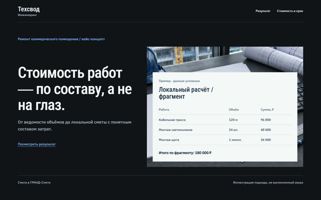
Кейсы
Стоимость работ — по составу, а не на глаз.
Смета в ГРАНД-Смете · 15000
От ведомости объёмов до локальной сметы с понятным составом затрат.
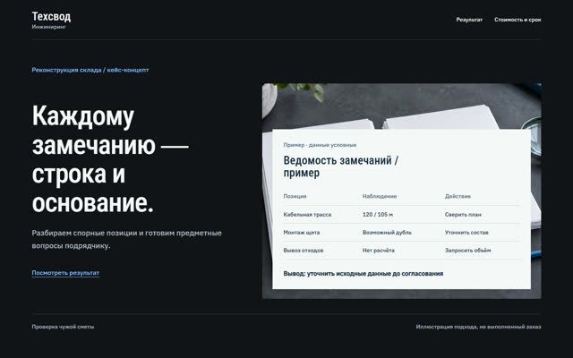
Кейсы
Каждому замечанию — строка и основание.
Проверка чужой сметы · 8000
Разбираем спорные позиции и готовим предметные вопросы подрядчику.
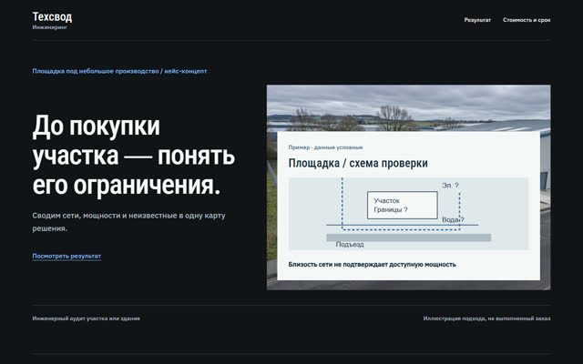
Кейсы
До покупки участка — понять его ограничения.
Инженерный аудит участка или здания · 175000
Сводим сети, мощности и неизвестные в одну карту решения.
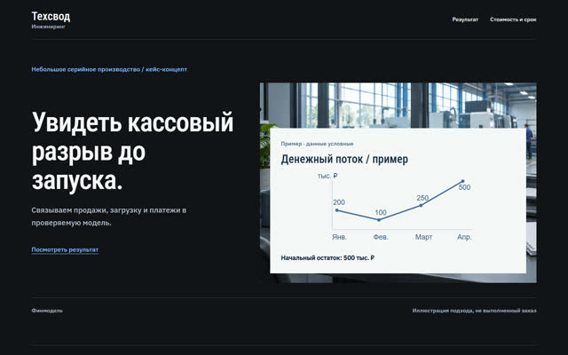
Кейсы
Увидеть кассовый разрыв до запуска.
Финмодель · 40000
Связываем продажи, загрузку и платежи в проверяемую модель.
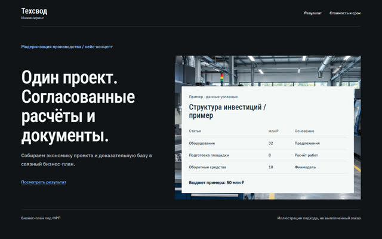
Кейсы
Один проект. Согласованные расчёты и документы.
Бизнес-план под ФРП · 280000
Собираем экономику проекта и доказательную базу в связный бизнес-план.
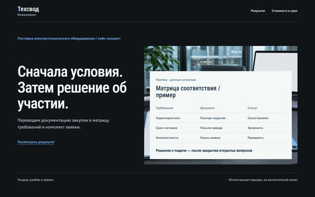
Кейсы
Сначала условия. Затем решение об участии.
Тендер: разбор и заявка · 10000
Переводим документацию закупки в матрицу требований и комплект заявки.
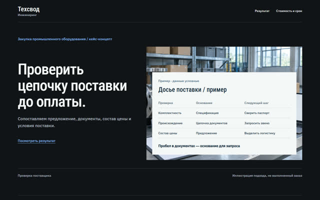
Кейсы
Проверить цепочку поставки до оплаты.
Проверка поставщика · 30000
Сопоставляем предложение, документы, состав цены и условия поставки.
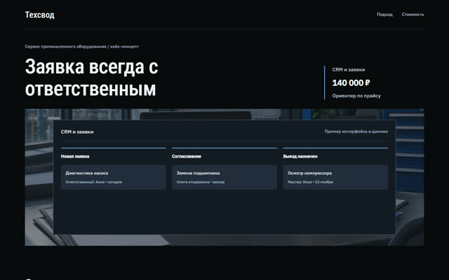
Кейсы
Заявка всегда с ответственным
CRM и заявки · 140000
Воронка, карточка заявки и список задач на день. Руководитель видит незакрытые обращения, мастер — данные для выезда.
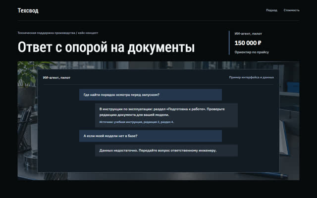
Кейсы
Ответ с опорой на документы
ИИ-агент, пилот · 150000
Пилот помощника, подготовленная база знаний и протокол проверки ответов. Запуск в работу — после оценки пилота.
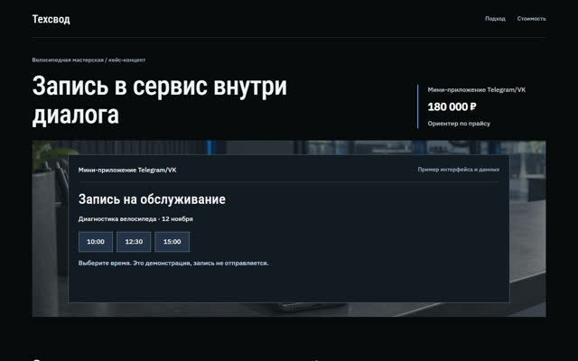
Кейсы
Запись в сервис внутри диалога
Мини-приложение Telegram/VK · 180000
Сценарий записи, экран администратора и уведомление о визите. Для концепта выбран Telegram; версия VK оценивается отдельно.
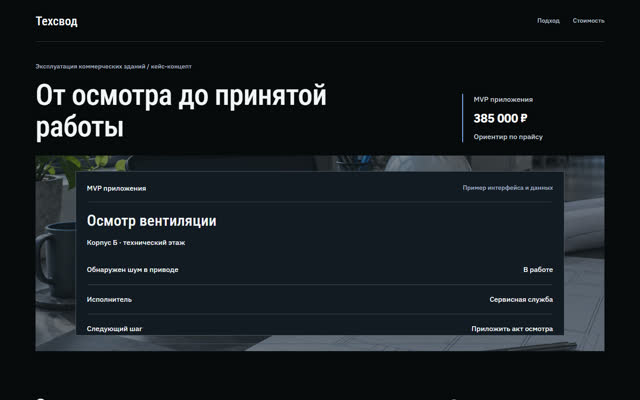
Кейсы
От осмотра до принятой работы
MVP приложения · 385000
Работающий контур MVP в согласованном объёме, исходный код, инструкция и план следующего этапа. Здесь показан интерфейс концепта.
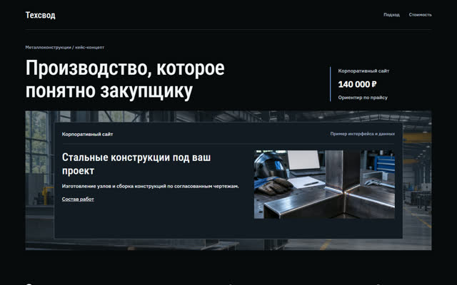
Кейсы
Производство, которое понятно закупщику
Корпоративный сайт · 140000
Адаптивный сайт с каталогом возможностей, страницами работ и понятным запросом расчёта.
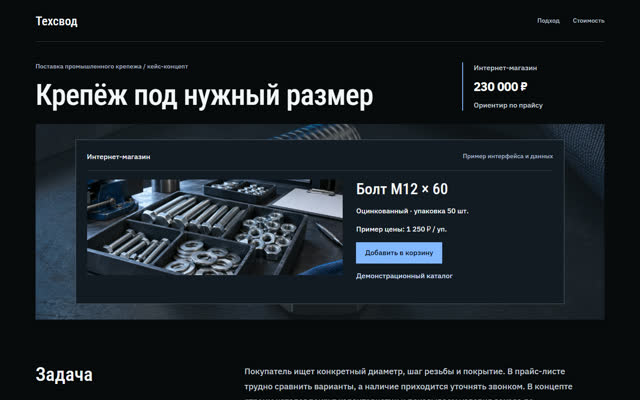
Кейсы
Крепёж под нужный размер
Интернет-магазин · 230000
Каталог, карточка товара, корзина и контур обработки заказа. Оплата и доставка подключаются по согласованному составу.
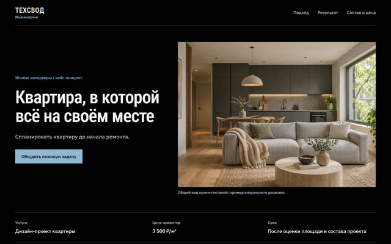
Кейсы
Квартира, в которой всё на своём месте
Дизайн-проект квартиры · 3 500 ₽/м²
От сценариев жизни до планов и ведомости отделки — на примере квартиры 50 м².
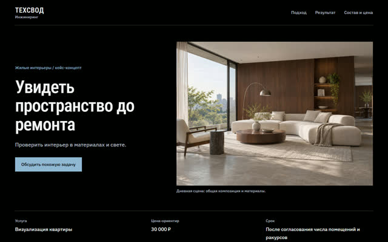
Кейсы
Увидеть пространство до ремонта
Визуализация квартиры · 30 000 ₽
Согласованные ракурсы помогают сравнить материалы, мебель и свет до закупки.
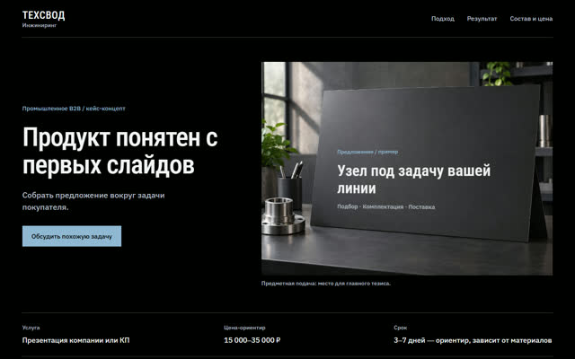
Кейсы
Продукт понятен с первых слайдов
Презентация компании или КП · 15 000–35 000 ₽
Сценарий, слайды и редактируемый исходник для разговора с закупщиком.
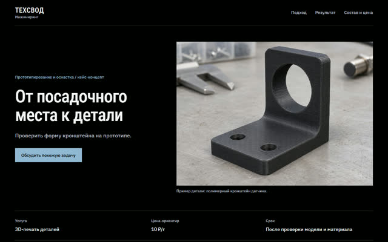
Кейсы
От посадочного места к детали
3D-печать деталей · 10 ₽/г
Пример кронштейна: проверка геометрии, пробная печать и контроль посадки.
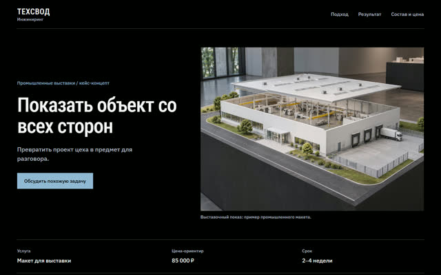
Кейсы
Показать объект со всех сторон
Макет для выставки · 85 000 ₽
От модели объекта до сборки, окраски и подставки для выставочного показа.
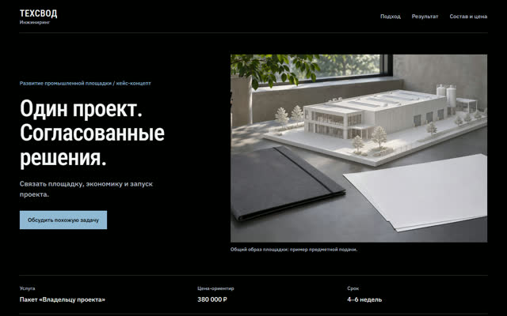
Кейсы
Один проект. Согласованные решения.
Пакет «Владельцу проекта» · 380 000 ₽
Аудит участка, финмодель, презентация, лендинг и план закупок в одном контуре.
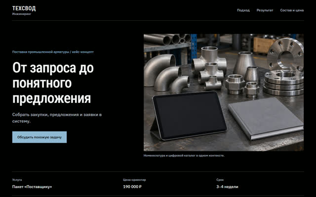
Кейсы
От запроса до понятного предложения
Пакет «Поставщику» · 190 000 ₽
Разбор тендеров, проверка поставщиков и себестоимости, CRM и сайт-каталог.
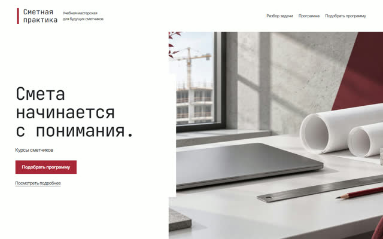
Лендинги
1.01 Сметная практика
Курсы сметчиков · швейцарская учебная сетка
Рабочий лист превращает учебную задачу в живой расчёт: объём умножается на расценку.
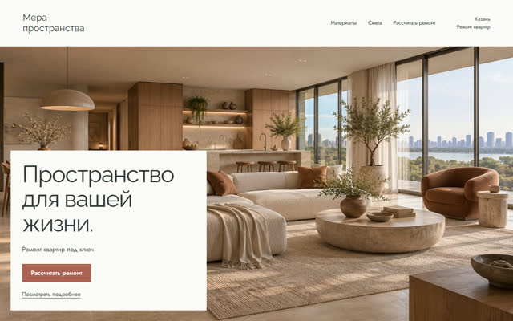
Лендинги
1.02 Мера пространства
Ремонт квартир под ключ · люкс-минимализм
Перспективная комната меняет черновую отделку на чистовую по выбору посетителя.
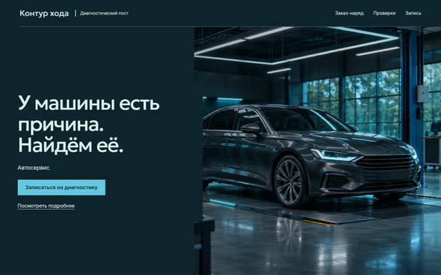
Лендинги
1.03 Контур хода
Автосервис · технологичный тёмный
Диагностический прибор реагирует на выбранный узел автомобиля.
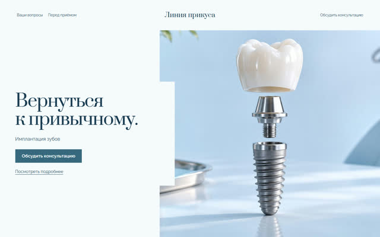
Лендинги
1.04 Линия прикуса
Имплантация зубов · медицинский предметный минимализм
Крупная авторская модель коронки, соединителя и импланта раскрывает предмет консультации.
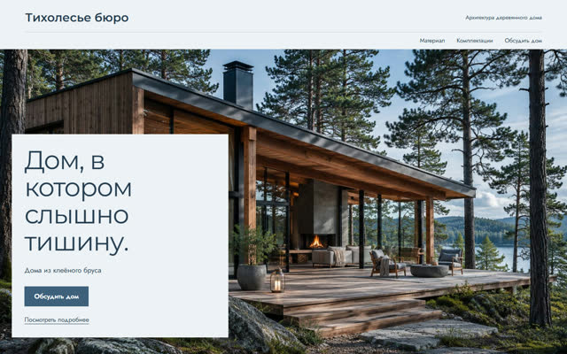
Лендинги
1.05 Тихолесье бюро
Дома из клеёного бруса · индустриальная архитектура
Панорамный фронтальный вид деревянного дома связывает архитектуру с окружающим ландшафтом.
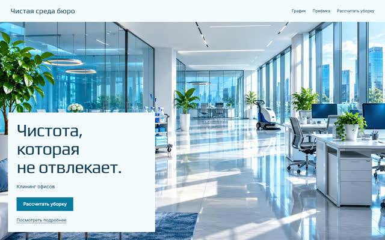
Лендинги
1.06 Чистая среда бюро
Клининг офисов · светлый технологичный
Посетитель перемещает границу очистки условного офисного стекла.
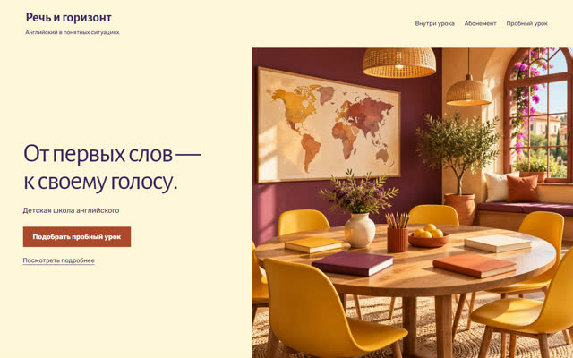
Лендинги
1.07 Речь и горизонт
Детская школа английского · тёплый семейный
Крупная английская фраза получает русский смысл и меняется вместе с возрастной группой.
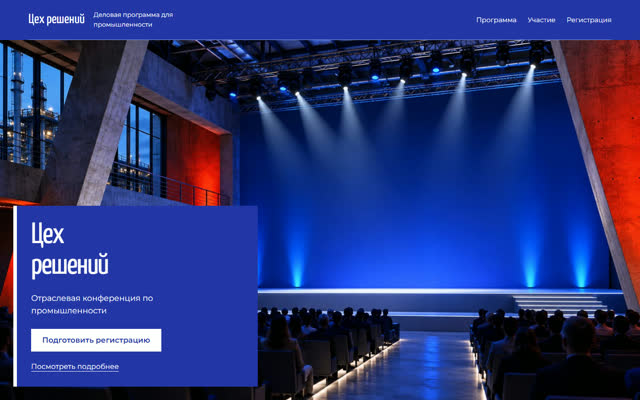
Лендинги
1.08 Цех решений
Отраслевая конференция по промышленности · конференционный брутализм
Сценическое табло с временем и темами превращает деловую программу в главный визуальный материал.
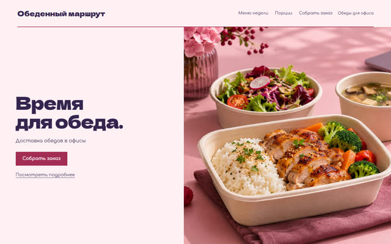
Лендинги
1.09 Обеденный маршрут
Доставка обедов в офисы · яркий молодёжный талон
Отрывной талон с меню дня объединяет выбор обеда, стоимость и срок доставки.
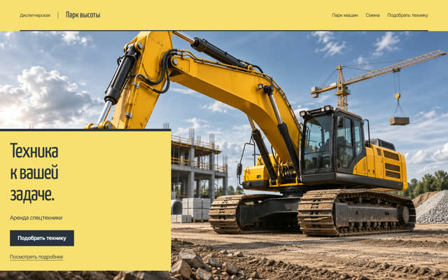
Лендинги
1.10 Парк высоты
Аренда спецтехники · индустриальный B2B
Диспетчерская карта связывает выбранную машину с точкой работ на объекте.
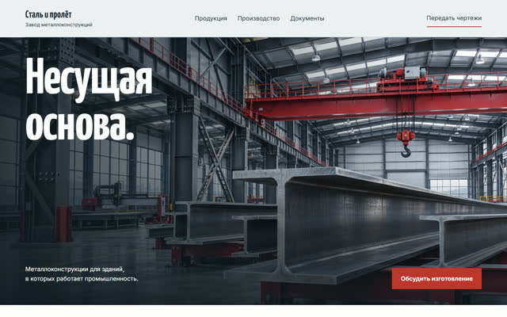
Корпоративные сайты
2.01 Сталь и пролёт
Завод металлоконструкций · Индустриальный B2B
Фотореалистичная панорама цеха со стальными балками показывает масштаб производства.
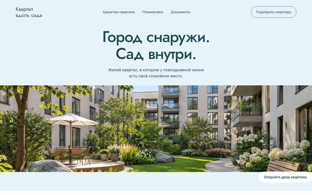
Корпоративные сайты
2.02 Квартал вдоль сада
Застройщик жилого квартала · Семейный архитектурный минимализм
Крупный кадр озеленённого двора раскрывает жилой квартал через повседневную среду.
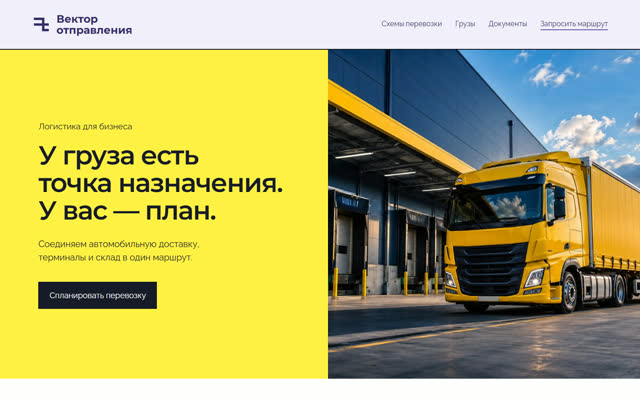
Корпоративные сайты
2.03 Вектор отправления
Логистическая компания · Контрастная швейцарская сетка
Жёлтый грузовой автомобиль и терминал связывают контрастную типографику с реальной логистикой.
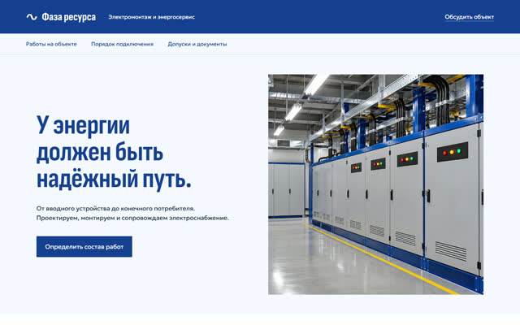
Корпоративные сайты
2.04 Фаза ресурса
Электромонтаж и энергосервис · Сервисный инженерный
Крупный кадр электрощитовой показывает предмет услуги; интерактивная схема сохранена в разделе энергосервиса.
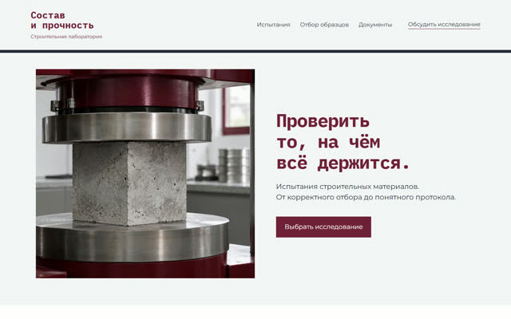
Корпоративные сайты
2.05 Состав и прочность
Строительная лаборатория · Лабораторный технический протокол
Бетонный образец в испытательном прессе делает лабораторную работу материальной.
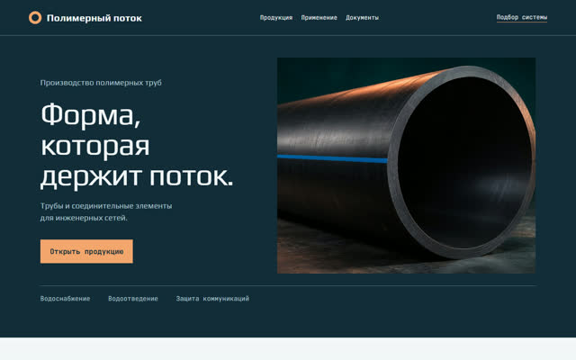
Корпоративные сайты
2.06 Полимерный поток
Производитель полимерных труб · Предметный индустриальный
Реалистичный срез полимерной трубы раскрывает толщину стенки и фактуру продукта.
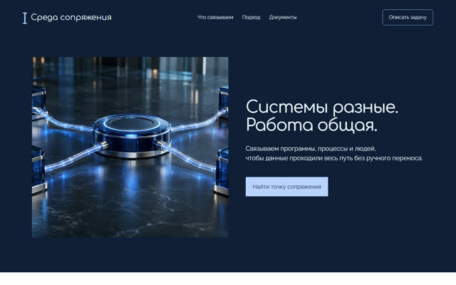
Корпоративные сайты
2.07 Среда сопряжения
IT-интегратор · Технологичный тёмный
Пространственный рендер четырёх узлов вокруг общего центра объясняет сопряжение систем.
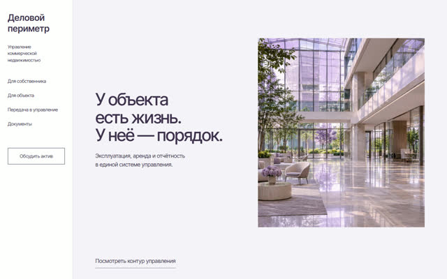
Корпоративные сайты
2.08 Деловой периметр
Управляющая компания коммерческой недвижимости · Каталог управления недвижимостью
Фотореалистичный атриум показывает среду коммерческого объекта; функциональный план сохранён ниже.
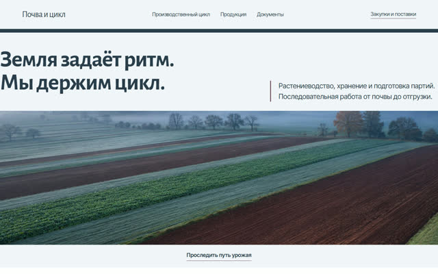
Корпоративные сайты
2.09 Почва и цикл
Агрохолдинг · Редакционный аграрный
Панорама полос обрабатываемых полей задаёт ритм аграрной редакционной подаче.
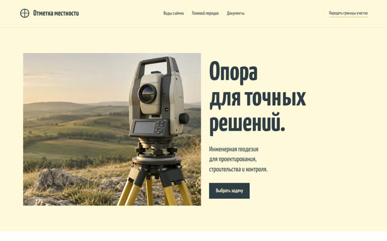
Корпоративные сайты
2.10 Отметка местности
Инженерная геодезия · Инструментальный ретро
Крупный геодезический прибор на местности связывает точность измерений с практикой.
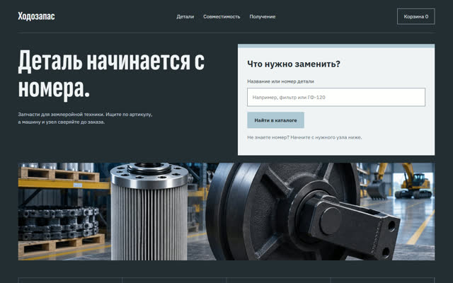
Магазины
3.01 Ходозапас
Запчасти для спецтехники · Складской индустриальный
Поисковая кассета совместимости: сначала номер детали и узел машины, затем покупка.
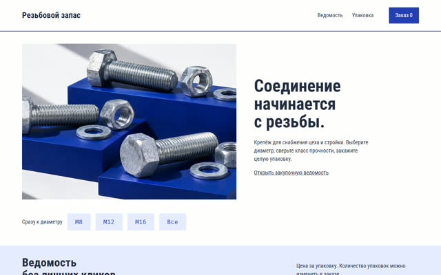
Магазины
3.02 Резьбовой запас
Крепёж и метизы оптом · Швейцарская закупочная сетка
Резьбовое обозначение становится крупной типографикой и быстрым входом в оптовую ведомость.
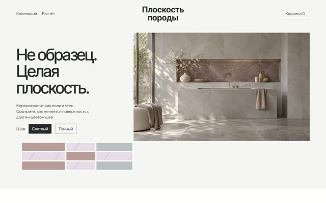
Магазины
3.03 Плоскость породы
Керамогранит и плитка · Архитектурный люкс-минимализм
Плиточное поле и цвет шва позволяют увидеть коллекцию как поверхность, а не отдельный образец.
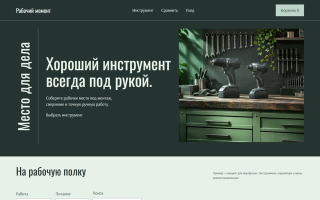
Магазины
3.04 Рабочий момент
Профессиональный инструмент · Тёмная инструментальная мастерская
Инструментальный щит организует первый экран как реальное рабочее место.
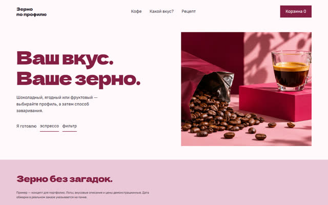
Магазины
3.05 Зерно по профилю
Кофе свежей обжарки · Яркий молодёжный
Вкусовые координаты помогают выбрать кофе без условного языка кофейного люкса.
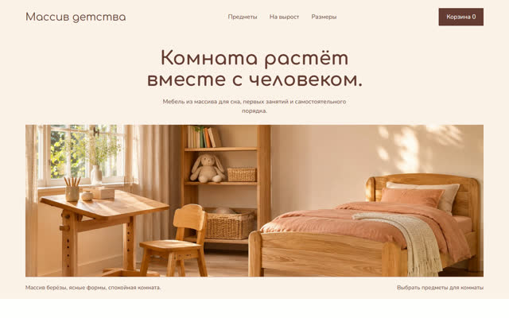
Магазины
3.06 Массив детства
Детская мебель из массива · Тёплый семейный
Фронтальная комната показывает мебель в масштабе, а изменяемая высота стола объясняет ростовую настройку.
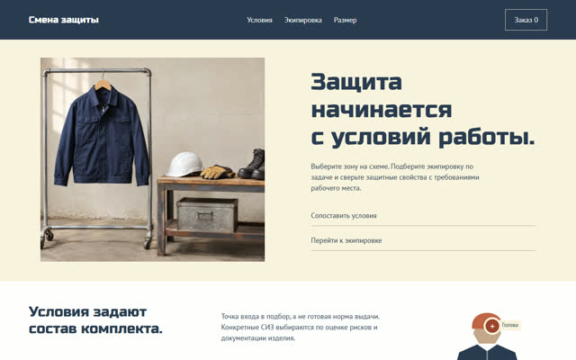
Магазины
3.07 Смена защиты
Спецодежда и СИЗ · Индустриальный B2B
Карта зон тела ведёт к подходящему разделу средств защиты.
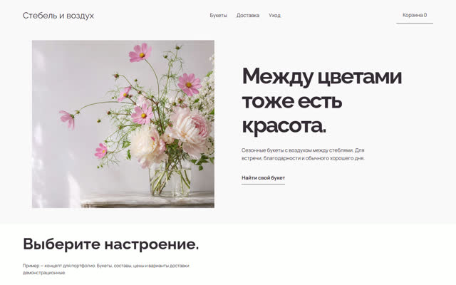
Магазины
3.08 Стебель и воздух
Цветы с доставкой по городу · Редакционный ботанический
Раздельные ботанические стебли задают воздушную вертикальную композицию.
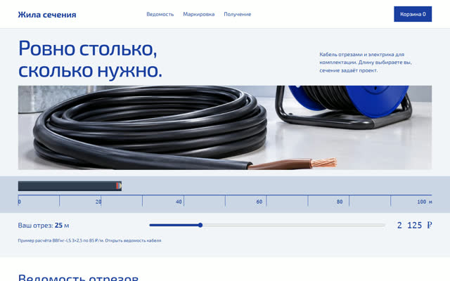
Магазины
3.09 Жила сечения
Кабель и электрика · Техническая ведомость
Мерная лента отреза превращает длину кабеля в конкретную закупочную позицию.
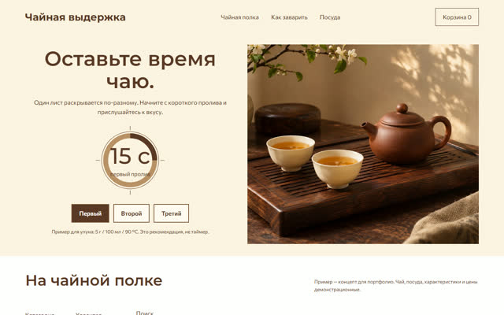
Магазины
3.10 Чайная выдержка
Чай и посуда для чайной церемонии · Ретро — чайная этикетка
Циферблат проливов показывает чай через время, температуру и внимание к приготовлению.
Магазины
3.11 Велюре
Элитная мебель с видеорядом · Кинематографический мебельный минимализм
Свет вдоль предмета: кинематографический интерьер и большое имя на тёмной стене.
Интерьеры
4.01 Ячейка света
Студия 28 м² под сдачу · инженерный компакт
Одна мебельная стена меняет сценарий комнаты в течение дня.
Интерьеры
4.02 Дом меж сосен
Загородный дом 160 м² · светлый люкс
Горизонтальный жилой разрез вдоль сада связывает общую жизнь и тихое крыло.
Интерьеры
4.03 Гранатовый двор
Ресторан грузинской кухни · тёплый ресторанный ретро
Общий стол становится осью гостеприимства вместо этнических декораций.
Интерьеры
4.04 Бюро параллелей
Офис IT-компании · технологичный тёмный
Акустическая карта делит офис по характеру контакта.
Интерьеры
4.05 Линия эмали
Стоматологическая клиника · медицинский минимализм
Непрерывная линия пациента делает пространство понятным с первого шага.
Интерьеры
4.06 Пудровый срез
Салон красоты · редакционный салон
Главным предметом салона становится зеркало с правильным фронтальным светом.
Интерьеры
4.07 Предметный зал
Шоурум мебели · швейцарский мебельный каталог
Модульный подиум даёт менять экспозицию без переделки интерьера.
Интерьеры
4.08 Два горизонта
Детская для двоих · тёплый семейный
Два равных личных горизонта и общая середина комнаты.
Интерьеры
4.09 Семейный периметр
Трёхкомнатная квартира для семьи · современный жилой минимализм
Маршрут обычного дня связывает личные комнаты с общим центром семьи.
Интерьеры
4.10 Вестибюль дождя
Лобби жилого комплекса · тёмный городской минимализм
Световая вертикаль над каменной стойкой ведёт человека от города к дому.
3D-печать и макеты
5.01 Дворометр
Макет жилого квартала для выставки · Выставочный минимализм
Выставочная композиция квартала со съёмными корпусами и открытым двором.
3D-печать и макеты
5.02 Платаформа
Корпус для электроники · Лабораторное досье
Разнесённая сборка объясняет доступ к плате и положение стоек.
3D-печать и макеты
5.03 Зубомер
Шестерня-запчасть для станка: примерочный образец · Технологичный тёмный
Крупный зубчатый венец показывает ритм 24 зубьев и посадку.
3D-печать и макеты
5.04 Дозовод
Прототип дозатора для упаковки · Мягкий предметный дизайн
Разрез камеры и ручной затвор объясняют путь технических гранул.
3D-печать и макеты
5.05 Грань форума
Сувенир для отраслевой конференции · Яркий событийный плакат
Гранёная скульптура и название события образуют памятный настольный предмет.
3D-печать и макеты
5.06 Дом в размере
Архитектурный макет частного дома · Архитектурный люкс-минимализм
Горизонтальный макет со съёмной крышей раскрывает внутренний план дома.
3D-печать и макеты
5.07 Ребро узла
Кронштейн для производственной линии · Швейцарская индустриальная сетка
Ребро между двумя посадочными плоскостями раскрывает монтажную задачу.
3D-печать и макеты
5.08 Ось сверления
Кондуктор для сверления · Индустриальный B2B
Пять направляющих втулок становятся предметом и последовательностью операции.
3D-печать и макеты
5.09 Инструменталь
Органайзер для инструмента · Ретро мастерская
Раскладка рабочего набора раскрывается через форму гнёзд и выемок.
3D-печать и макеты
5.10 Литейная фаза
Мастер-модель для литья · Редакционный
Плоскость разъёма связывает печатный оригинал с будущей формой.
Презентации
6.01 Сталепредел
Инвест-презентация завода
Торец стальной заготовки как образ следующего передела.
Презентации
6.02 Сметный довод
Коммерческое предложение на сметы
Редактура двух листов показывает пользу проверяемого расчёта.
Презентации
6.03 Береговая мера
Застройщик для банка
Баланс на опоре связывает активы проекта и источники финансирования.
Презентации
6.04 Смена связей
Стартап SaaS
Цельная лента событий показывает приём ответственности за заявку.
Презентации
6.05 Валовая линия
Квартальный отчёт собственнику
Финансовое равенство В − З = Р становится композицией обложки.
Презентации
6.06 Сборочный регламент
Тендерная презентация подрядчика
Досье с корешком и загнутым листом представляет проверяемое тендерное предложение.
Презентации
6.07 Площадь зерна
Франшиза кофейни
Чашка сверху и орбита посадочных мест связывают кофе с городской площадью.
Презентации
6.08 Корневая телеметрия
Агротех-стартап
Корневая система становится сетью точек измерения на разной глубине.
Презентации
6.09 Рейсовый узел
Презентация транспортной компании
Складчатая грузовая лента показывает маршрут между точками передачи.
Презентации
6.10 Практика отдела
Корпоративная программа обучения
Рабочая тетрадь с полем и рукописным комментарием наставника.
Приложения
7.01 Водомерика
Доставка питьевой воды · Светлый продуктовый минимализм
Прозрачная бутыль с мерной шкалой превращает объём воды в главный образ.
Приложения
7.02 Ремонтакт
Запись в автосервис · Индустриальный B2B
Подъёмник связывает силуэт автомобиля с рабочей линией сервиса.
Приложения
7.03 Актометр
Прораб, объекты и акты · Швейцарская документальная сетка
Лист приёмки с отгибом становится основой документального интерфейса.
Приложения
7.04 Пульсометрия
Фитнес-клуб · Неоновая спортивная афиша
Типографический ритм повторений задаёт характер силовой тренировки.
Приложения
7.05 Соседний двор
Управляющая компания для жильцов · Тёплый семейный интерфейс
Одно выделенное окно на фасаде связывает приложение с квартирой пользователя.
Приложения
7.06 Грузомер
Грузовое такси · Яркая диспетчерская карта
Соединение двух адресов становится главным графическим жестом приложения.
Приложения
7.07 Ячейковый учёт
Склад и инвентаризация · Складской терминал
Матрица адресных ячеек воспроизводит физическую структуру стеллажа.
Приложения
7.08 Приёмная линия
Запись в клинику · Медицинский минимализм
Календарный лист делает удобную дату центром спокойного интерфейса.
Приложения
7.09 Зерновой час
Telegram-мини-приложение кофейни · Редакционная кофейная карта
Разрез чашки показывает напиток как сочетание слоёв рецепта.
Приложения
7.10 Контрольный такт
Обходчик, чек-листы оборудования · Тёмная инженерная сцена
Мнемосхема насосного узла соединяет три точки проверки в маршрут обхода.